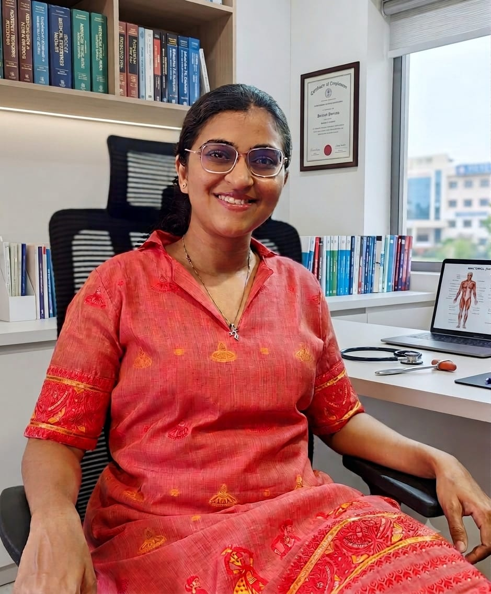

Dr. Adway Kulkarni
Endocrinology Consultant
MBBS · DNB (Medicine) · DrNB (Endocrinology)
Dr. Adway Kulkarni treats adults across the full range of hormonal and metabolic conditions - diabetes, thyroid disorders, obesity, pituitary and adrenal disease, and bone health. He holds an MBBS and DNB in Medicine, along with a DrNB in Endocrinology.
His approach centres on building long-term, coordinated care plans rather than one-off consultations - looking at weight, hormones, bone density and cardiovascular risk together, especially for patients managing more than one metabolic condition.
Areas of focus
- Diabetes and metabolic disorders
- Thyroid disorders
- Obesity and lipid disorders
- Pituitary and adrenal disorders
- Calcium, vitamin D and bone health
- Endocrine hypertension
Qualifications
- MBBS
- DNB (Medicine)
- DrNB (Endocrinology)

Dr. Vrushali Kulkarni
Paediatric Endocrinology Consultant
MBBS · MD (Pediatrics) · DNB (Pediatrics) · ISPAE Fellowship in Paediatric Endocrinology
Dr. Vrushali Kulkarni cares for children with growth, puberty, thyroid, diabetes and other hormonal conditions. Her training includes a Clinical Observership at the Royal Children's Hospital, Melbourne, and an ESPE Clinical Fellowship at the Royal Manchester Children's Hospital.
This international exposure shapes how she manages complex paediatric endocrine cases — she works closely with families, explaining each step of diagnosis and treatment in plain language, particularly for conditions like short stature, early or delayed puberty, and childhood diabetes.
Areas of focus
- Growth and short stature
- Early or delayed puberty
- Childhood diabetes
- Thyroid disorders in children
- Childhood obesity
- Bone and mineral disorders
Qualifications
- MBBS
- MD (Pediatrics)
- DNB (Pediatrics)
- ISPAE Fellowship in Paediatric Endocrinology
Further training
- Clinical Observership — Royal Children’s Hospital, Melbourne
- ESPE Clinical Fellowship — Royal Manchester Children’s Hospital